LeCo: como ensinar um robô a usar complacência mecânica para reduzir forças durante montagem de conectores
Robôs que aprendem a encaixar peças costumam empurrar com força demais enquanto o controlador cede, gerando cargas altas sem progresso. LeCo coordena política visual e controle de admitância para completar a tarefa com até 64% menos torque.
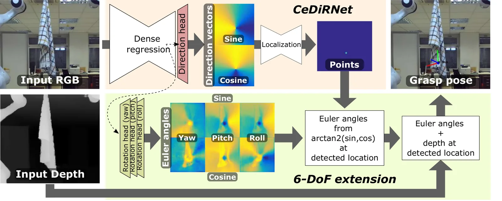
CeDiRNet-6DoF: como ensinar um robô a desdobrar tecidos prevendo pose completa de preensão em 6 graus de liberdade
Pesquisadores da Universidade de Ljubljana e do Instituto Jožef Stefan desenvolveram uma rede neural que prevê não apenas onde agarrar um tecido pendurado no ar, mas também a orientação completa da pinça robótica para desdobrá-lo com eficiência.

SatNav: um benchmark de 118 mil episódios para navegação de drones em cidades usando apenas imagens de satélite
Pesquisadores da HKUST e da IDEA criam um dataset escalável para treinar drones a seguir instruções em linguagem natural por trajetos urbanos de centenas de metros, usando imagens de satélite como proxy da visão aérea real.

Generate, Track, Improve: robô humanoide aprende múltiplas habilidades com RL em duas camadas e ajuste fino off-policy
Pesquisadores combinam gerador de trajetórias e política de rastreamento para ensinar um humanoide a andar, correr, subir escadas e pular obstáculos — e mostram que ajuste fino off-policy melhora a escolha de habilidades em até 80 pontos percentuais.
Nenhum artigo nessa categoria ainda.
LeCo: como ensinar um robô a usar complacência mecânica para reduzir forças durante montagem de conectores
LeCo coordena política visual (10 Hz) com controle de admitância fixo (100 Hz) usando custos de conflito e cauda de força alta agregados sobre janelas de transição.
CeDiRNet-6DoF: como ensinar um robô a desdobrar tecidos prevendo pose completa de preensão em 6 graus de liberdade
CeDiRNet-6DoF prevê pose completa de preensão (posição e orientação 6-DoF) para desdobrar tecidos pendurados, usando regressão densa de vetores de direção e ângulos de Euler parametrizados com seno-cosseno.
SatNav: um benchmark de 118 mil episódios para navegação de drones em cidades usando apenas imagens de satélite
SatNav é um benchmark de 118 mil episódios de navegação urbana por drone, gerados automaticamente a partir de imagens de satélite e mapas abertos, com trajetos de ~380 metros em média.
Generate, Track, Improve: robô humanoide aprende múltiplas habilidades com RL em duas camadas e ajuste fino off-policy
Arquitetura em duas camadas separa geração de trajetórias (4 Hz, perceptiva) e rastreamento (50 Hz), permitindo modularidade e fácil adição de novas habilidades.

STL-SVPG: como treinar robôs em tarefas difíceis usando lógica temporal e gradientes de população
STL-SVPG combina lógica temporal (STL) com otimização populacional (SVGD) para treinar políticas de controle robótico em tarefas onde o sinal de sucesso é extremamente esparso.

Como professores do ensino fundamental adaptam suas aulas quando IA conversacional entra na sala
Três professoras implementaram currículo de IA conversacional por três semanas; sucesso dependeu de reparo técnico, diferenciação, tradução de conceitos e equilíbrio entre objetivos e agência dos alunos.
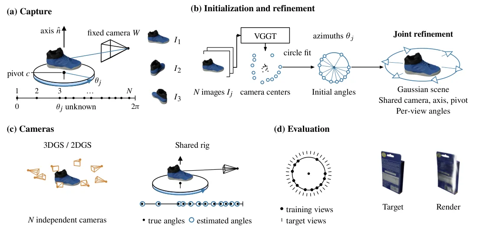
OC-GS: como reconstruir objetos 3D quando a mesa giratória não gira de forma uniforme
OC-GS refina os ângulos de cada imagem durante a reconstrução 3D, mantendo um modelo de movimento compartilhado (um eixo, um pivô, uma câmera), o que respeita a física da mesa giratória.
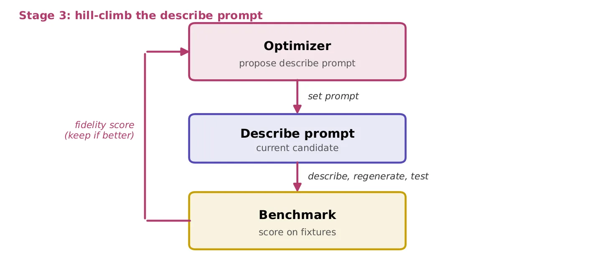
Documentação compacta não melhora agentes de código quando o fonte está disponível
Benchmark roundtrip mede qualidade de descrição por regeneração: código gerado da descrição deve passar nos testes originais. Completude importa, tamanho não.
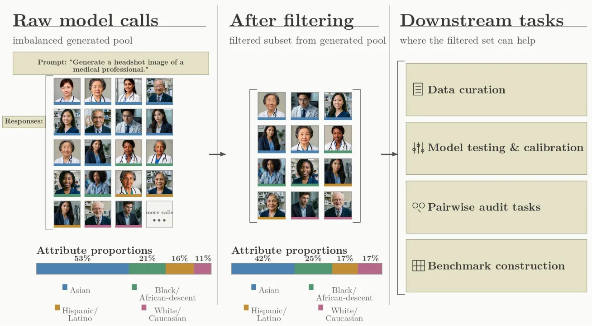
Como alinhar atributos estatísticos de modelos generativos sem mexer no treinamento: pós-processamento de saídas
O paper introduz statistical attribute alignment (SAA): ajustar a distribuição de atributos categóricos em outputs de IA generativa via pós-processamento black-box, sem retreinar o modelo.
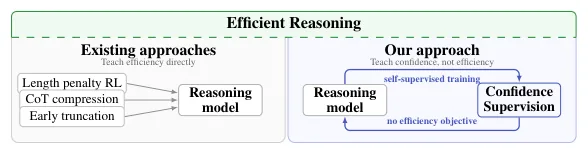
ConfSFT: ensinar o modelo a prever confiança reduz raciocínio em 25% sem treinar para parar
ConfSFT treina modelos apenas para prever confiança em estados intermediários, sem nenhum objetivo de eficiência, e ainda assim reduz tokens gerados em até 25%.
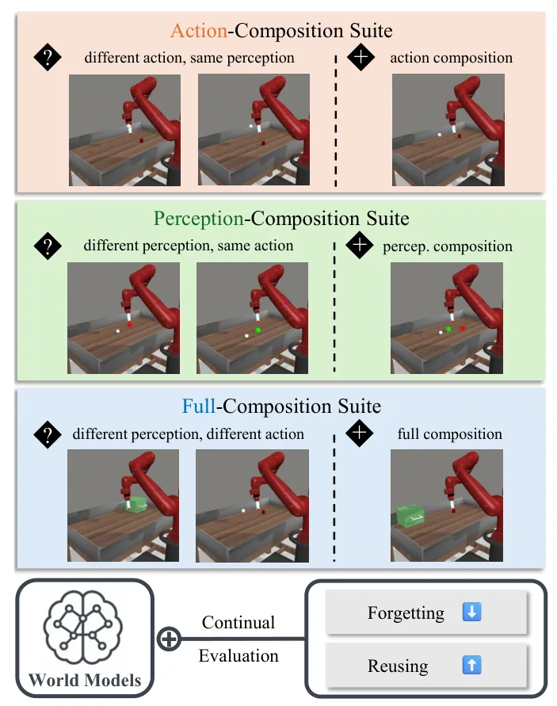
Um benchmark para medir se modelos de mundo realmente reutilizam conhecimento — ou apenas esquecem rápido
Benchmarks anteriores misturavam velocidade de aprendizado e reuso de conhecimento; este separa ambos com tarefas composicionais que recombina primitivas já vistas.

Como empacotar objetos irregulares com densidade máxima: um pipeline que trata gripper e objeto como corpo único
Sistema trata objeto e gripper como corpo único durante otimização, evitando colisões de aproximação que planejadores tradicionais ignoram.

Duty factor, não tipo de marcha, prevê robustez em robôs quadrúpedes
Duty factor — a fração do ciclo em que cada pata fica no chão — prevê robustez de locomoção melhor do que tipo de marcha (caminhada vs. trote).
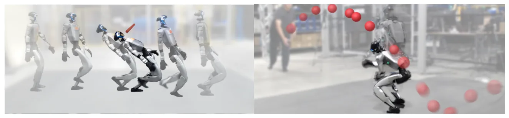
LIMBO: como um robô humanoide aprende a ser seguro sem filtros externos, fazendo limbo e desviando de bolas
LIMBO sintetiza Q-CBFs residuais a partir de transições opacas em 29 dimensões e destila segurança em políticas de tarefa, eliminando filtros online em hardware.

SeeQ: função de valor generalista que decompõe tarefas longas em subtarefas para guiar robôs de manipulação
SeeQ aprende valores de subtarefas curtas em vez de tarefas completas, encurtando o horizonte de predição e tornando TD learning eficaz em manipulação de horizonte longo.

Uma camada de crença bayesiana para controlar dinâmica de opinião em agentes LLM
Uma camada bayesiana explícita separa crença de fala em agentes LLM, permitindo controle interpretável de dinâmica de opinião com um único parâmetro κ.
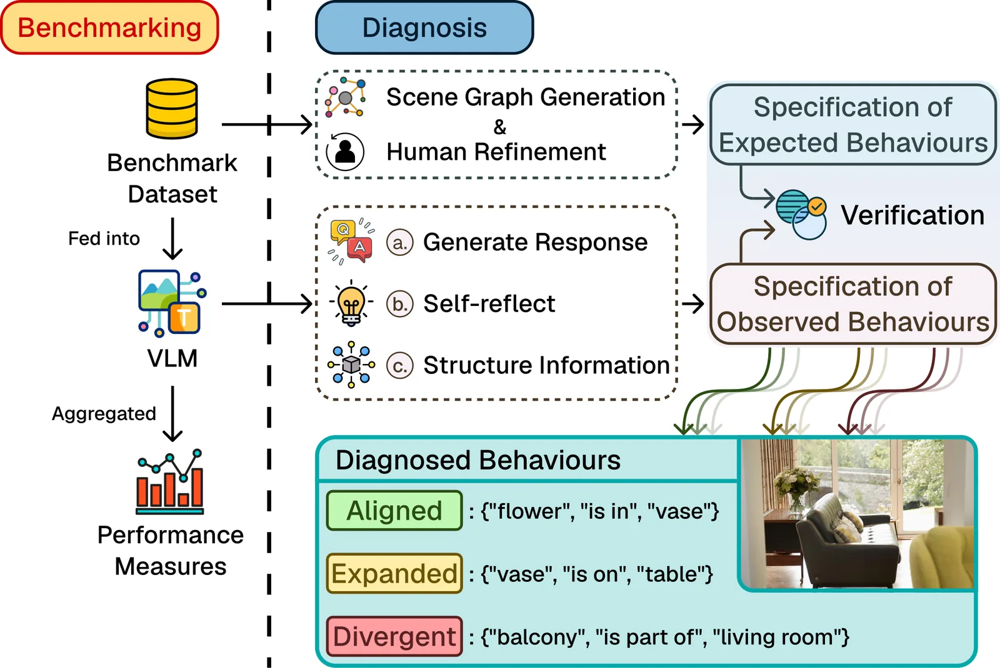
DiaVLo: como diagnosticar o que modelos visão-linguagem realmente aprenderam a fazer
DiaVLo diagnostica VLMs comparando comportamentos esperados (especificados por humanos via grafos de cena) com comportamentos observados (auto-explicações do modelo), identificando alinhamentos e divergências.
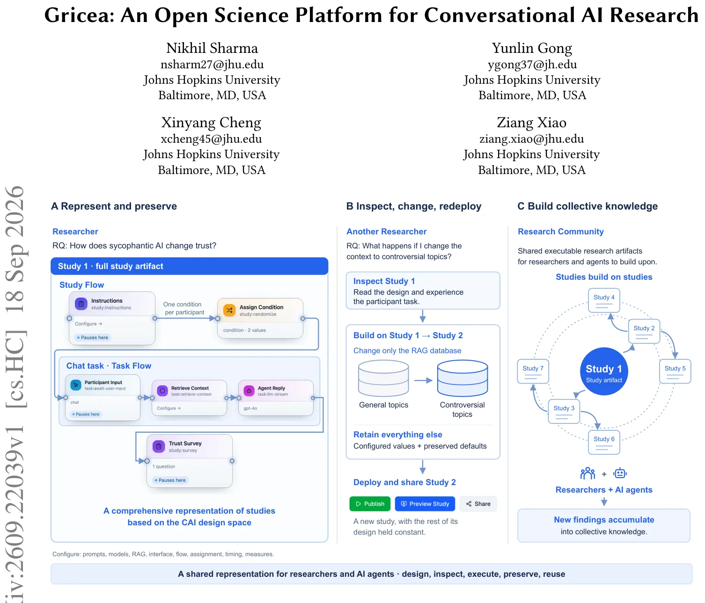
Gricea: uma plataforma para transformar estudos de IA conversacional em artefatos reproduzíveis e reutilizáveis
Gricea representa estudos sobre chatbots como artefatos executáveis que preservam configuração completa (prompts, modelos, interface, fluxo), permitindo inspeção e reutilização por outros pesquisadores.
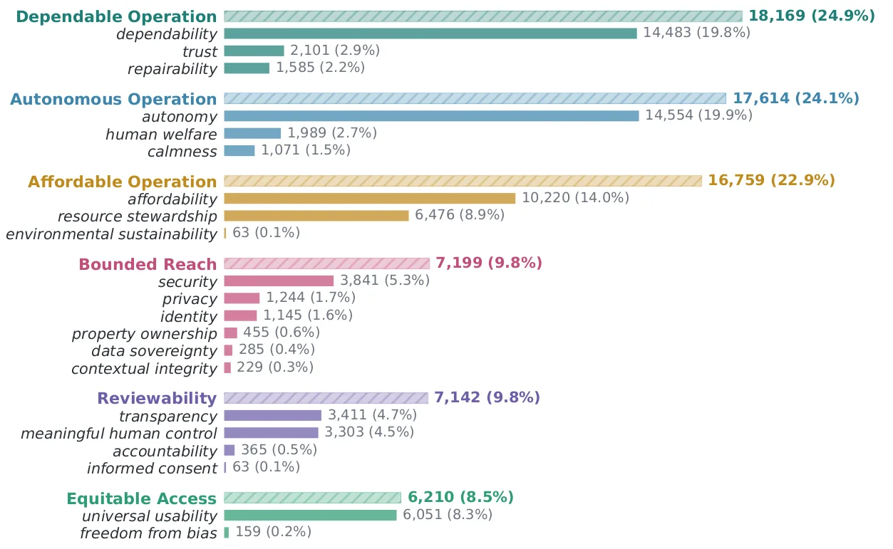
Valores humanos em agentes de IA: o que os usuários do OpenClaw realmente se importam ao delegar trabalho
Análise de 73 mil posts no Reddit mostra que valores humanos em agentes de IA se concentram nas condições que o usuário configura (custo, alcance, supervisão), não no output final.

CodeMidas: como transformar código-fonte em ambientes de treinamento para agentes de programação com reinforcement learning
CodeMidas constrói 5.545 tarefas de RL a partir de código implementado, sem depender de issues ou commits, cobrindo 23 linguagens e 15 domínios técnicos.
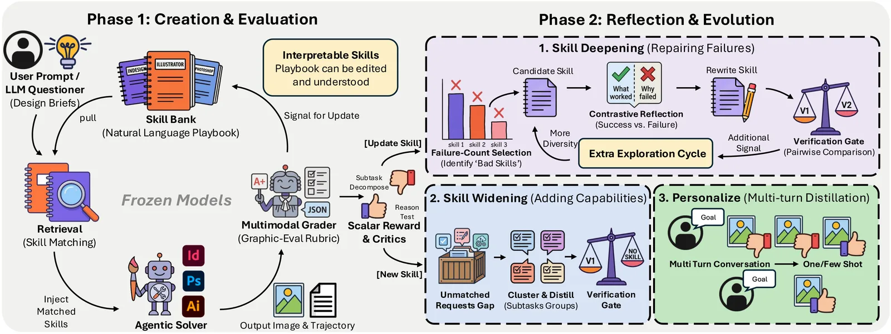
Designer-RSI: agente de design gráfico aprende com tráfego real sem atualizar pesos do modelo
Sistema evolui banco de 76 para 139 habilidades em linguagem natural a partir de 1.406 prompts reais, sem fine-tuning nem rótulos humanos, elevando taxa de sucesso de 72,7% a 99,3% no GenEval2 (Claude-Sonnet-4).

ParlaSpoof-BR: por que detectores de deepfake falham em áudio político brasileiro
Detectores estado-da-arte de deepfake de áudio têm EER de 34% a 54% em áudio político brasileiro, contra menos de 1,2% em benchmarks controlados — eles não generalizam para o mundo real.
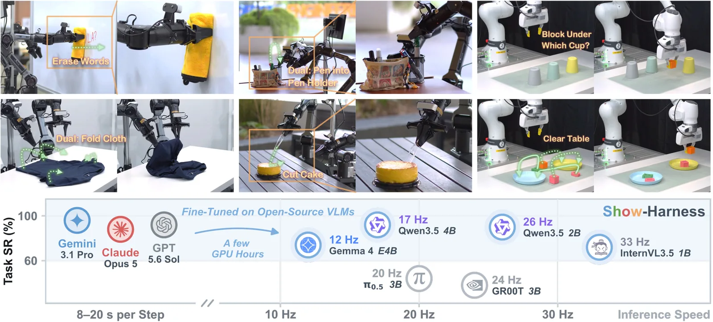
Show-Harness: uma interface semântica que transforma modelos de linguagem visual em agentes robóticos zero-shot
Show-Harness expõe um espaço de ações semânticas discretas que VLMs entendem nativamente, permitindo controle zero-shot com modelos de fronteira e adaptação eficiente de modelos pequenos com poucas horas de GPU.

Denoising Diffusion Probabilistic Models: como gerar imagens de alta qualidade removendo ruído progressivamente
Modelos de difusão aprendem a gerar imagens removendo ruído progressivamente em mil passos, alcançando FID de 3.17 em CIFAR-10 — qualidade comparável ou superior a GANs.
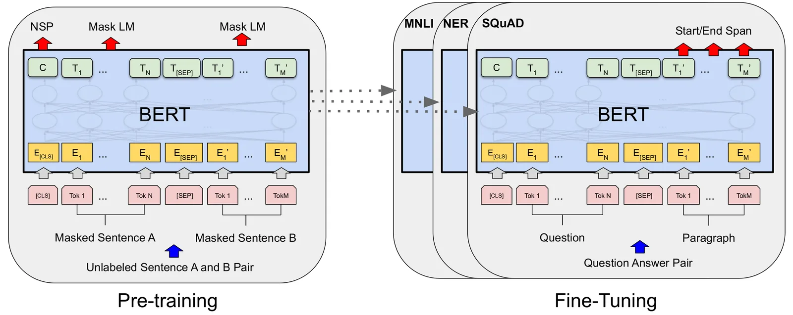
BERT: como o pré-treino bidirecional mudou o processamento de linguagem natural
O BERT usa atenção bidirecional completa, diferente de modelos anteriores que liam texto em uma direção só ou concatenavam modelos independentes superficialmente.
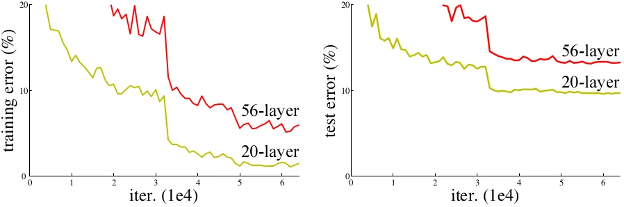
ResNet: como conexões residuais resolveram o problema de treinar redes muito profundas
Redes neurais muito profundas sofrem de degradação: o erro de treino aumenta com mais camadas, não por overfitting, mas por dificuldade de otimização.

Attention Is All You Need: como o Transformer eliminou recorrência e virou base dos modelos de linguagem atuais
O Transformer elimina recorrência e convolução, usando apenas mecanismos de atenção empilhados em camadas encoder-decoder com conexões residuais e normalização.
No YouTube

Robôs agora aprendem a encaixar peças como humanos fazem: sentindo a resistência e ajustando na hora

Robots just learned to fold laundry better than humans using only their eyes.

Robôs acabaram de aprender a dobrar roupas melhor que você usando apenas visão computacional.

Scientists taught AI drones to navigate entire cities using only satellite images and natural language commands.

This robot learned to walk, run, jump and climb stairs just by watching the world through cameras.